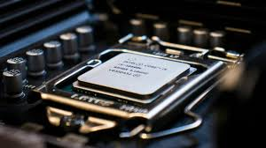
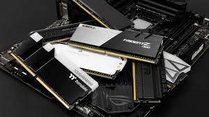

Components
The core components of a PC are the CPU, GPU, RAM, and motherboard.
These parts work together to determine how powerful, fast,
and capable your computer is for gaming or work.
Central prosseing unit (CPU)
The CPU is the brain of the computer. It handles calculations and runs programs.
A faster CPU makes the PC respond quickly.

Graphincs card (GPU)
The GPU, or Graphics Processing Unit, manages graphics and visuals.
It is essential for gaming, video editing, and 3D work.
A strong GPU provides smooth visuals, higher frame rates,
and better rendering performance.

Random access memory (RAM)
RAM is temporary memory the PC uses while running programs.
More RAM helps run multiple programs at the same time.

Motherboard
The motherboard connects all the parts together.
It decides which CPU, GPU, and RAM can
be used and lets you add storage and other devices.

All these components are very important for a computer, they are the foundation or bare minimum for a PC to work.
There are more components needed in a PC like a Power supply, or storage but as I said these are the miniumum, If you intrested look
at the info tab for more information about these components, or if you want to build your own PC.